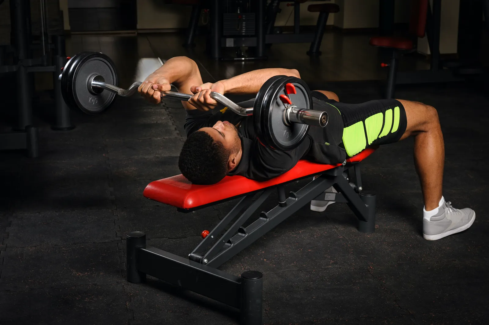
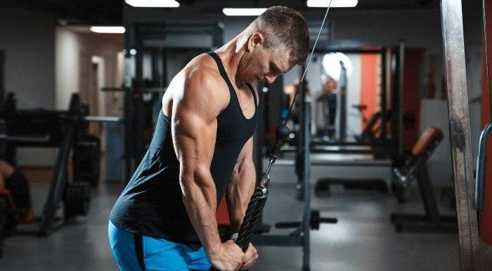
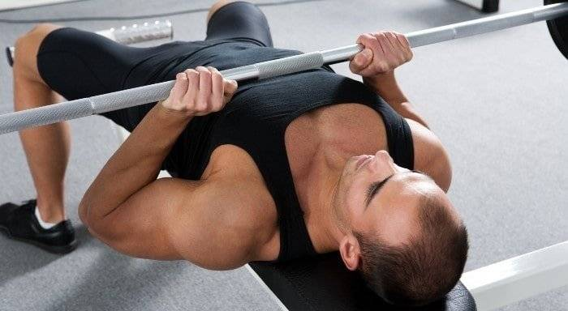

TRÍCEPS
Los tríceps son un grupo de músculos ubicados en la parte posterior del brazo, compuestos principalmente por tres cabezas: lateral, medial y larga. Estos músculos son responsables de la extensión del codo, es decir, enderezar el brazo. Este músculo cubre 2 tercios del tamaño del brazo aproximadamente, por lo que es muy importante desarrollarlo para tener unos brazos grandes.
Fondos
Uno de los mejores ejercicios de calistenia y el mejor para tener unos tríceps grandes y fuertes, los fondos es un ejercicio exigente que consiste en levantar y bajar tu cuerpo en barras paralelas o alguna superficie elevada con la suficiente separación y altura. Al ser un ejercicio compuesto te recomiendo incluirlo de forma inteligente en tus rutinas de empuje y siempre al principio de tu rutina de tríceps. (Si tienes una máquina de fondos en tu gimnasio te la recomiendo encarecidamente)

Press Francés
Uno de los mejores ejercicios para desarrollar el tríceps debido a su amplio rango de movimiento y facilidad de sobrecarga progresiva sumado a que puede hacerlo cualquier persona sin importar su fuerza, el Press Francés es clave en tu rutina de tríceps para poder abarcar todas las cabezas del tríceps junto con unos fondos o un press banca con agarre cerrado y tener unos brazos grandes.
Extensión de Codo en polea
Este ejercicio es uno de los más populares para trabajar los tríceps. Yo no lo veo como un ejercicio obligatorio para el desarrollo de los tríceps ni mucho menos debido a la superioridad de los ejercicios anteriores vistos en esta lista. Sin embargo sigue siendo (si se realiza bien) uno de los mejores ejercicios para los tríceps debido a su seguridad, facilidad y capacidad de sobrecarga.
Press Banca con Agarre Cerrado
Una variación del press banca plano pero enfocado en los tríceps y los trabaja de forma compuesta. Un gran ejercicio para desarrollar los tríceps sin poner en riesgo tus codos, debido a su "comodidad", no es obligatorio para el desarrollo del músculo pero puedes hacerlo como reemplazo de los fondos si es que no puedes o no te gustan los fondos por alguna razón (una de esas razones puede ser que prefieres evitar los fondos por su gran uso de calorías).
